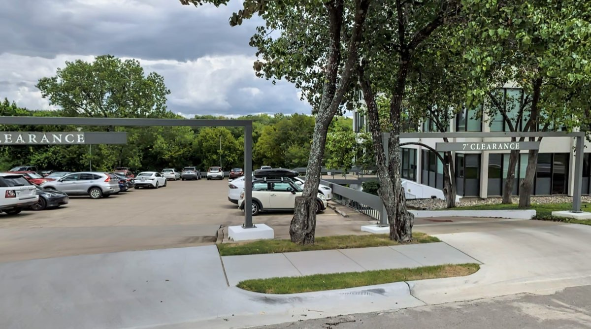
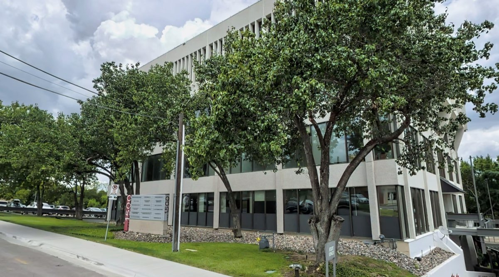

Contact & Directions
1500 W 38th Street, Suite 23.
Neuropsychology Specialists of Austin is at 1500 W 38th Street, Suite 23, in central Austin. Call 512-637-5865 to book a consultation, or to ask whether an evaluation is the right thing for your child.
Office details
Address
Neuropsychology Specialists of Austin1500 W 38th Street, Suite 23
Austin, TX 78731
Phone and fax
Phone 512-637-5865
Fax 737-215-8710
Office hours
Monday to Friday, 8:30am to 5:00pm Confirm
These hours come from a third-party directory listing rather than from the practice. Call to confirm before traveling.
Parking
Park in the lot on the north side of the building, or in the garage underneath it.
The covered entrance is posted at 7 feet of clearance.

The building

Map
Intake forms
Intake forms are completed through the practice's form provider, not on this website. The office sends you the link when your appointment is scheduled. Confirm
Nothing on this site collects patient information. Do not send clinical details about your child, or anything else identifying, by email or through this website.
Next step
Call the office
Tell us your child's age, what changed, and who referred you. There is no insurance to check first — we are private pay. We will tell you what the consultation costs and when we can see them.
1500 W 38th Street, Suite 23Austin, TX 78731
Phone 512-637-5865
Fax 737-215-8710